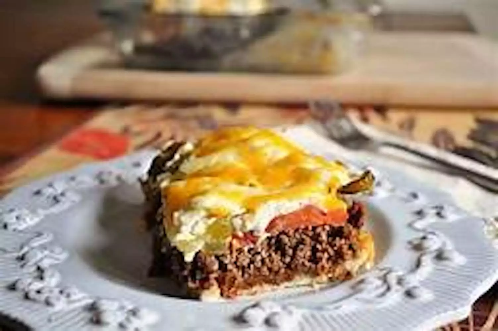

Description
Made this on a lark and it ended up being one of the best one-pan meals
I've discovered.
Ingredients
- 1 (16.3 ounce) can refrigerated biscuits
- 2 pounds ground beef
- 1 (1 ounce) package taco seasoning
- ¾ cup water
- 1 medium onion, halved and sliced
- 1 medium red bell pepper, halved and sliced (1 1/2 cups)
- ½ cup sour cream
- ½ cup mayonnaise
- 8 ounces shredded Cheddar cheese, divided
- 2 medium tomatoes, sliced
- 1 (4 ounce) jar sliced jalapeno peppers, drained (Optional)